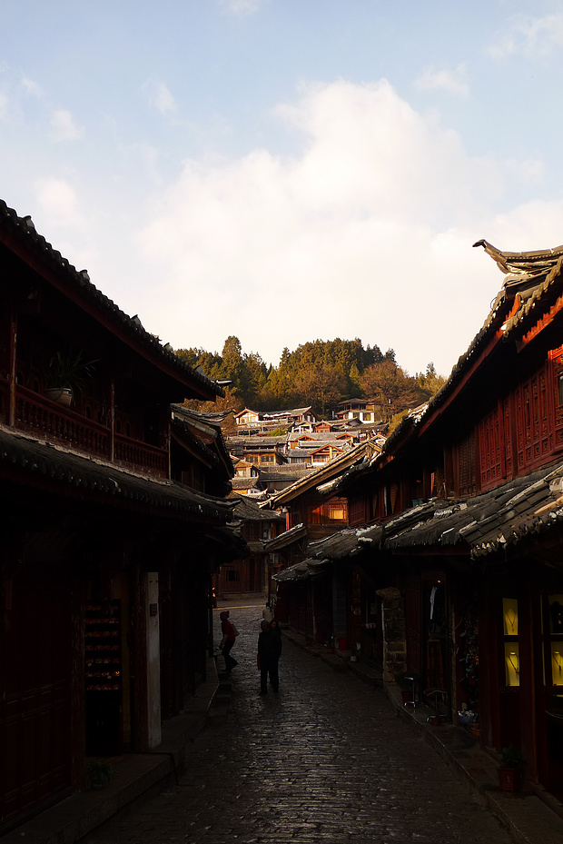
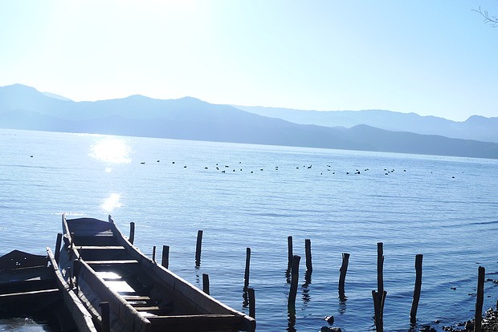
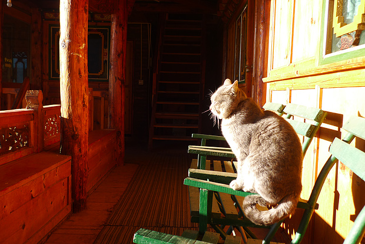
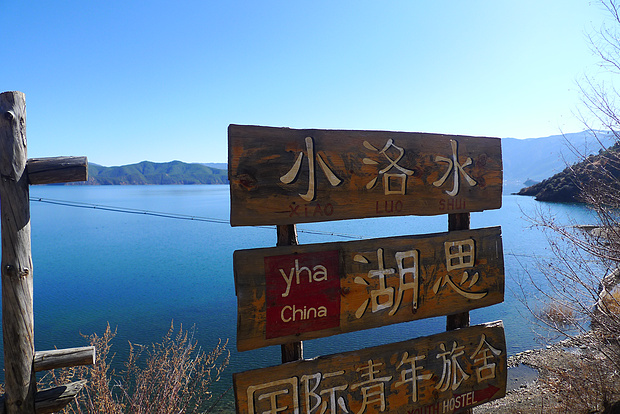
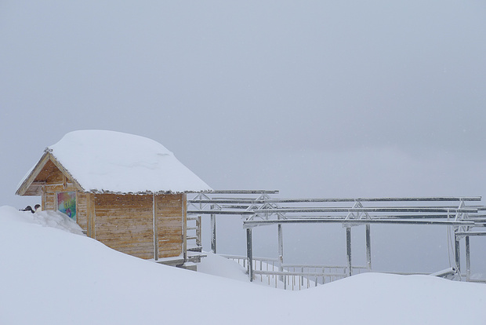

雪山下的高原小城（1月大丽行之丽江篇，古城、拉市海、泸沽湖、玉龙、束河攻略，泸沽湖、美食交通等完整详细）





大理-丽江
火车从大理前往丽江只需一个半小时左右，票价硬座35元。汽车也是两小时以内。
丽江火车站建得高大雄伟，立刻让我想到异曲同工的敦煌火车站。都是旅游小城的国际门面吧，却多少显得突兀。
丽江选择网上营销搞得太好的纳西净地客栈。客栈提供火车站接站，面包车拉回客栈。这家客栈有好几个院子，都距离不远，但位置离古城的中心四方街较偏。淡季价格非常便宜，40元双床或大床标间（正常价格是50，因为参加他家的微博活动又稍便宜一点）。各方面服务和配套都凑合，但一点没有宾至如归的感觉，而是积极推销他家的旅游产品，一旦你表露出对参团无兴趣打算自己走之类，他也不会对你的自助行提供任何信息。反正是绝不会让我再想住这家了。丽江的客栈几乎都兼营周边游，大的就组自家客源，小的与其他客栈或旅行社拼。
丽江的客栈，浴霸和电热毯是常规配备，暖气就比较少了，尤其北方用惯了暖气的朋友要注意这一点。
1月14日
拉市海是距离丽江12公里的一个湖泊，旅游产业主要由周围的十几个纳西村庄兴盛起来。通常去拉市海的主要活动是骑马、划船。前往拉市海可以搭乘面包车或者骑自行车，但多数人的选择应该是参加古城里随处都能找到的“一日游”。拉市海一日游从100到280价格不等，区别主要在骑马的线路和时间。100的当然是骑马时间最短的大概只往山上走了一小段路就返程。要注意许多号称走茶马古道最长路线的其实也只是到半山腰，这种线路算中等价格在150-180之间。 因一个同事的朋友介绍，我参加了另一个客栈的一日游团，以150元的价格走一般250-280元的线路，也就是最长的茶马古道，是景区门票中的D（E？）线。据说这150元是马场给客栈的价格，而150以上的加价，就是客栈拿到的佣金了，可见期间的利润空间多大。
骑马时间在两小时以上，上到有一片水域的地方，视野、风景绝佳，也是古时马帮休息的地方。在此间生火做饭，与马夫们同吃。然后可以继续往上攀登到有“茶马古道”的石碑上留影，不过此时海拔已有一定高度，往上爬需谨慎。在休息处往深走有一眼泉水，马夫说饮了此间的水女的可怀孕，男的可减掉肚子，未婚的可有桃花……-_-!!中午饭后，还看到了下雪，作为一个从未见过下雪的南方人，实景一一对应书上所说，真是特别高兴，当然同行的是仨东北人，我还得尽力抑制不显得过于夸张露怂了哈哈～
骑马时间在两小时以上，上到有一片水域的地方，视野、风景绝佳，也是古时马帮休息的地方。在此间生火做饭，与马夫们同吃。然后可以继续往上攀登到有“茶马古道”的石碑上留影，不过此时海拔已有一定高度，往上爬需谨慎。在休息处往深走有一眼泉水，马夫说饮了此间的水女的可怀孕，男的可减掉肚子，未婚的可有桃花……-_-!!中午饭后，还看到了下雪，作为一个从未见过下雪的南方人，实景一一对应书上所说，真是特别高兴，当然同行的是仨东北人，我还得尽力抑制不显得过于夸张露怂了哈哈～
总的说来，拉市海一行蛮快乐的。第一次骑马骑了那么长时间，真正掌握了一些骑马的基本要领。且和之前在内蒙草原骑马完全不同，这回走的是险峻的羊肠小道，上山下山时有陡坡，道路不足一米宽，一边是陡壁一边是悬崖，时常有把自家性命托付给垮下这匹马的感觉。马夫是纳西小伙，用英文赶马Come on!Go!Slowly之类，非常好玩。一路上，认识了松树、松子及各种植物，纳西马夫时常一边赶马一边即兴歌唱，问起唱的是什么，只道是纳西族谈情说爱的唱词。 至于划船，基本是骑马附赠的“礼物”。“拉市海”这个湖面积不大，景色也与泸沽湖等完全不一个量级。若没有候鸟看头不大。冬季虽然是传说中最好的观鸟季节，但能不能看到候鸟、拍到候鸟基本还是要靠人品。我在湖上看到了丹顶鹤和鸳鸯，也算略有收获罢。
从拉市海回来，正是丽江阳光最好的下午时分。丽江分新城和古城（通常意义上的古城专指大研古城——因形似砚台而得名），新城是个现代化小城，可到此处逛超市和餐馆，自然比古城里划算许多。
丽江古城是古时茶马互市的中心，发展旅游业之后声明倒是愈发显赫，应该以可算国内几个古城之首了，来之前也曾听说不少人回来之后魂牵梦绕。但正因为名气大，不敢抱太大期望，深知对一个地方越向往也许将越失望。不过，丽江终究一点没让我失望，虽说高原小城早已被完全开发，但商业化依然掩盖不去它自身的清丽靓丽：明媚的阳光，清澈见底穿城而过的河水，蜿蜒的小巷与石桥……活脱脱的天生丽质难自弃。 从北面的大水车进入，大水车也是游人合影处，大水车近旁有许愿风铃区，就是兜售风铃写下心愿挂在亭子间的梁上，价值不大，不过有兴趣可以看看别人写下的心愿，五花八门，妙趣横生。水车处据说有著名的丽江“神兽”似羊似驼的草泥马（这名字是恶搞的吧。。学名羊驼），可惜我在丽江几天没碰上。
从大水车顺东大街或新华路走，到四方街（古城的中心地带，在大理和丽江的各村镇几乎皆有“四方街”，都是最热闹的地方），从七一街到关门口、进光义街，一路从北往南走是逛古城的标准路线，但实际上，自古城里只要随心所欲自由漫步即可。另外，顺水道走也是不错的选择。